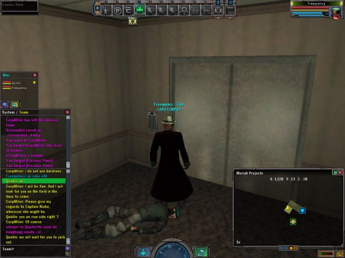
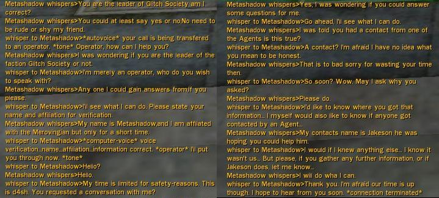
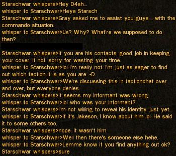
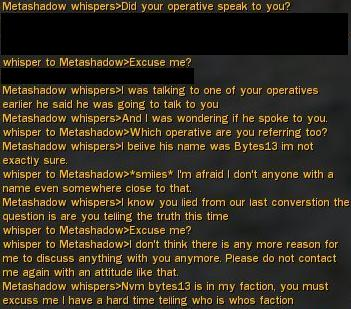
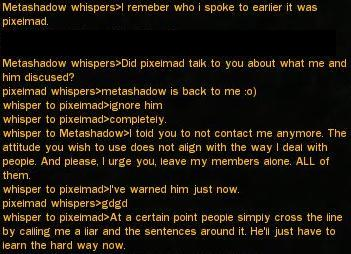
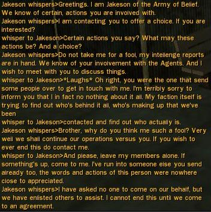
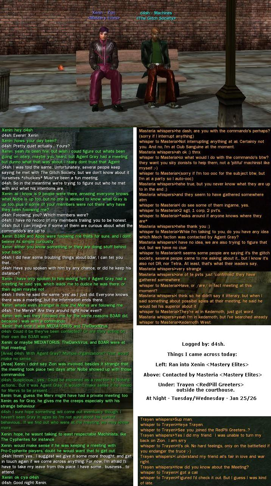

Archival Science Databanks
Communications intercept. Transmission detected Tue 22nd of Apr 2008 at 08:24 AM by RockyB. Communique follows:
Below is all the survillence data for the first week of The Glitch Societys operations. At this time the dataset is complete.
Initial Contact with 'Commando' Programs
PvtJohnson <- Detected jacking in to the Matrix at 21:40 GMT
1/20/06 21:40 GMT: PvtJohnson is seen being escorted by "Coolhat" and "Backus", from the Faction "36th Chamber"
1/20/06 21:47 GMT: PvtJohnson's Neurokinetic level: 9
1/20/06 22:04 GMT: PvtJohnson's Neurokinetic level: 10
1/20/06 22:30 GMT: Target (PvtJohnson) Lost
1/20/06 22:55 GMT: Target (PvtJohnson) Detected Leaving the Matrix
SgtSteele <- Detected entering the Matrix at 11:00 GMT
SgtLong <- Detected entering the Matrix at 00:20 GMT
PvtMorris <- Detected entering the Matrix at 00:25 GMT
1/21/06 00:30 GMT: SgtSteele and PvtMorris enter Tabor West and begin arguing with two people in Commando uniforms 'Jakeson' and 'Targetor'
1/21/06 00:32 GMT: PvtMorris leaves to 'train'. Target lost as he leaves, survillence remains on SgtSteele.
1/21/06 00:37 GMT: SgtLong arrives on the scene.
1/21/06 00:39 GMT: SgtSteele: "Jakeson, I believe others now understand that you have no power in this system. Nor do you understand what you truly propose. I consider this matter resolved. We understand Jakeson is not a threat."
1/21/06 00:39 GMT: SgtSteele jacks out
1/21/06 00:40 GMT: Mug-shots and information on Neurokintic levels gathered uploaded to this data repository.
1/21/06 01:00 GMT: Information received from one of our Operatives, Ru7hl3ss:
LtWilliams is SgtSteele's Commanding Officer.
There Have been several instances of operatives impersonating commandos and trying to infiltrate the zion command structure. This may be the case with 'Jakeson'.
When asked if he knew SgtWest, SgtSteele replied that he didn't, and would report this finding to his commanding officer.
SgtSteele's favourite District is International, but he will not leave Richland.
SgtSteele was missioning tonight between 11-12pm GMT with Kilarth, Zion4Eva, Atem, MbsterGTO and Sykin.
1/21/06 01:15 GMT: PvtMorris exits the Matrix.
1/21/06 01:20 GMT: Target (SgtSteele) lost. Time to exit Matix is unknown.
1/21/06 03:55 GMT: PvtBeck sighted in Moriah Projects NK lvl 10
1/21/06 03:57 GMT: Unable to obtain further information at this time, target lost due to data feedback loop ((LAG))
1/21/06 04:07 GMT: Target left the Martix.
PvtJohnson <- Detected jacking in to the Matrix at 10:42 GMT
1/21/06 10:46 GMT: Target (PvtJohnson) acquired at Tabor Central Hardline.
1/21/06 10:51 GMT: PvtJohnson: "I am waiting for these Zion soldiers to continue my training."
1/21/06 10:51 GMT: Likely Accomplices: "Zamna", faction "Novus Ordo"; "Retoicon", faction "Chariots of Fire"
1/21/06 10:55 GMT: Target (PvtJohnson) lost
1/21/06 11:11 GMT: Target (PvtJohnson) Reacquired, Tabor Central Hardline
1/21/06 11:14 GMT: Target (PvtJohnson) Appears to commit suicide. Possibly a ploy to avoid survillence. Is he on to us? Target Lost
1/21/06 11:15 GMT: Target (PvtJohnson) Exits the Matrix
SgtLong <- Detected jacking in to the Matrix at 11:15 GMT
1/21/06 11:20 GMT: Operative "Zamna", known associate, acting in a furtive manner. Survillence started in hope of picking up SgtLong
1/21/06 11:22 GMT: Longrange survillence indicates SgtLong's Neurokinetic level: 6
1/21/06 11:25 GMT: Operative "Zamna" lost, long range survillence still indicates SgtLong is in the area
1/21/06 11:33 GMT: Target (SgtLong) Never acquired. Survillence suspended
1/21/06 11:33 GMT: Another fake Commando 'SgtDrake' spotted at Tabor West Hardline.
1/21/06 15:30 GMT: Initial contact with 'PvtDyson'. At point of contact assumed to be another fake and so not trailed, later intelligence indicates he is part of the Commando organisation
1/21/06 21:57 GMT: SgtSteele detected leaving the Matrix, entry time unknown
1/22/06 09:17 GMT: Outside information indicates a new Commando, 'PvtWard', has joined the taskforce
SgtLong <- Detected jacking in to the Matrix at 14:15 GMT. Due to initial confusion amongst the operative concerning fake Commandos, surveliience not initiated
1/22/06 16:55 GMT: Surviellence initialed on target (SgtLong)
1/22/06 17:04 GMT: Positive ID on target (SgtLong) at Kedemoth East Hardline
1/22/06 17:04 GMT: SgtLong's Neurokinetic level: 11
1/22/06 17:05 GMT: Possible link to Kalt Chemical corporation? Unlikely, but possible based on area
1/22/06 17:24 GMT: 6 man team tracking SgtLong's movements. Possible detection suspected, proceeding more cautiously. Tracked into Moriah Projects
1/22/06 17:25 GMT: SgtLong's Neurokinetic level: 11
1/22/06 17:25 GMT: Known accomplices for this target (SgtLong): "Fr0gBust3r", "Xenin" and "Demiglyph", factional affiliation "Mastery elites"
1/22/06 17:32 GMT: Operative 'Prodigel' made by accomplice "Xenin". Told to retreat from the area to avoid blowing the entire team
1/22/06 17:33 GMT: Accomplice "Xenin" began asking probing questions of Operative "B3ar" in private messages. Descision made to pull the entire team from the area
1/22/06 17:33 GMT: Accomplice "Xenin": ok what are you guys up to?
1/22/06 17:33 GMT: Operative "RockyB" to Operative "B3AR": Tell them that you're missioning with me and that you wanted to see what the commandos were doing
1/22/06 17:34 GMT: Operative "Xenin"'s response: more liek you been ordered to keep an eye on their progress
1/22/06 17:34 GMT: Operative "RockyB" to Operative "B3AR": Just ask them what gave them that idea
1/22/06 17:34 GMT: Operative "Xenin"'s response: well its strange how you been following the commando alot
1/22/06 17:34 GMT: Operative "RockyB": We mission a lot around Tabor and Moriah
1/22/06 17:35 GMT: Operative "Xenin": Maybe,maybe not, in future your activitys will be reported.
1/22/06 17:36 GMT: Senior Operative on the scene (RockyB) suspended survillence for an indefinite period to avoid arousing more suspicion
1/22/06 18:00 GMT: New survillence order instigated on the command of Operative "RockyB":
- 1.) No TGS memebers are to partake in any survillence operations against the Commandos without first informing the senior Operative present
- 2.) All operatives engaged in survillence operations will be unassuming, unaffiliated RSIs. For this purpose a 'shell' faction purportedly aligned with Zion has been created, going by the name of 'Neo's Armada'
- 3.) All operatives report directly to the senior operative jacked into the matrix, who will co-ordinate the intelligence gathering and update this report
1/22/06 18:05 GMT: Disturbing reports about the presumed fake commando "SgtJakeson"
1/22/06 18:15 GMT:Operative "Gookin" reports: isotope33 is one of the ppl that jakeson told
PvtMorris <- Detected jacking in to the Matrix at 18:55 GMT
1/22/06 19:00 GMT: Communications breakdown results in operative "Mestiak" placing a possibly misconstrued call to the Commando 'SgtLong', which was originally intended to be received by the operative "Seymour"
1/22/06 19:31 GMT: SgtLong and PvtMorris observed at Tabor Park West.
1/22/06 19:32 GMT: Long range intelligence indicates SgtLong's Neurokinetic level is: 12
1/22/06 19:32 GMT: Long range intelligence indicates PvtMorris's Neurokinetic level is: 10
SgtSteele <- Detected jacking in to the Matrix at 19:43 GMT
LtWilliams <- Detected jacking in to the Matrix at 19:48 GMT
1/22/06 19:50 GMT: Long range intelligence indicates LtWilliams's Neurokinetic level is: 10
1/22/06 19:54 GMT: Operative "RockyB" registers fears about all three high-ranking commandos being in the Matrix at one time. He believes that they may be meeting to discuss The Glitch Societies actions
1/22/06 19:55 GMT: Long range intelligence indicates LtWilliams's Neurokinetic level is: 10
1/22/06 20:00 GMT: Faction leader d4sh demands that all survillence operations cease immeditaly. All Operative comply.
1/22/06 20:30 GMT: External Data sources suggest that the Commandos do not exit the matrix through Hardlines, but instead commit suicide. This confirms an earlier observation
[Quoted from External DataSource: "GamiB is right...do not lvl the commandos...I myself am guilty of helping only for the mere reason that they are LET. After asking many questions while on a mission i disbanded the team to let them fend for themselves..better yet..i asked if they used hardlines to transfer out of the matrix..Corpl miller response..No we dont use HLs...what was great about it.. I followed him down the block, into an elevator, hit the 5th floor button...lmao and only to watch him commit suicide...lol..So Zion we ask u plese do not lvl the commandos."

1/22/06 20:35 GMT: External Data sources also bring up an interesting theory about the general
1/22/06 20:41 GMT: Target (LtWilliams) exits the Matrix
LtWilliams <- Detected jacking in to the Matrix at 20:54 GMT
1/22/06 20:55 GMT: Target (SgtSteele) exits the Matrix
1/23/06 18:00 GMT: Faction leader d4sh registers concerns about people trying to extract information from TGS operatives, and asks that any queries are sent direct to him

1/23/06 12:00 GMT: Faction leader d4sh reinstates survillence operations with a small team of operatives
1/23/06 23:45 GMT: SgtSteele Neurokinetic level: 19
1/23/06 23:45 GMT: Intelligence indicates target (SgtSteele) is following the path of "gunman"
1/23/06 23:45 GMT: Target (SgtSteele)'s accomplices: "Romav", "Khalum" and one unknown party. All are affiliated with the "Omega Syndicate"
. About 6:45 PM EST, 23 Jan.
1/23/06 --:-- GMT: PvtJackson's precense detected in the Matrix, time on entry and exit unknown
1/23/06 23:45 GMT: PvtJackson's Neurokinetic level: 13
1/23/06 23:48 GMT: Target (PvtJackson) spotted at Tabor Central Hardline
1/22/06 20:55 GMT: Target (CorpFrost) enters the Matrix. Location and time of exit unknown
1/24/06 00:00 GMT: Target (PvtJackson) spotted in Moriah Projects
1/24/06 00:00 GMT: Operative "PixelMad" registers the opinion that: I suspect he's teaming with "Mastery Elites", a Zion faction, as there were three of them around the central hardline when he jacked out. Names unknown
1/24/06 00:00 GMT: Operative "RockyB": Mastery Elites have shown a lot of interest in the commandos. I feel that they could develop into a threat at a later date, especially as Xenin is already suspicious of us
1/24/06 01:11 GMT: Target (CorpFrost) Detected at Median Park East Hardline
1/24/06 01:11 GMT: CorpFrost's Neurokinetic level: 11
1/24/06 01:11 GMT: Target (CorpFrost)'s Accomplices: "Kahhn"(15), "4Rk"(30) and "Catzi"(40), factional affiliation: Coded Souls
1/24/06 12:00 GMT: Faction leader d4sh registers more concerns about the trickery Zionists are using in order to trick the members of TGS into releasing confidential Information:




1/24/06 16:44 GMT: Target (PvtJohnson) detected in the Matrix. Entry time unknown
1/24/06 16:49 GMT: Target (PvtJohnson) Exits the Matrix
1/24/06 23:00 GMT: Targets PvtJackson, CorpFrost, PvtBeck, SgtLong and SgtSteele detected entering the Matrix
1/24/06 23:00 GMT: Target (CorpFrost) Neurokinetic level: 12
1/24/06 23:00 GMT: Target (PvtBeck) Neurokinetic level: 11
1/24/06 23:00 GMT: Target (SgtLong) Neurokinetic level: 13
1/24/06 23:00 GMT: Target (PvtJackson) Neurokinetic level: 14
1/24/06 23:30 GMT: Reports emerge of a meeting to 'debrief' the Commandos. The meeting is traced to the top floor of the courthouse near Kedemoth West Hardline
1/24/06 01:00 GMT: Faction leader "d4sh" reports on private conversation held with various Redpills:

1/25/06 --:-- GMT: Targets PvtJackson, CorpFrost, PvtBeck, SgtLong and SgtSteele exit the Matrix, time unknown
1/25/06 18:00 GMT: Targets SgtLong and SgtSteele detected in the Matrix. Entry time unknown
1/25/06 20:00 GMT: Faction leader "d4sh" is accosted by Commandos while jacking in to the Tabor West Hardline
1/25/06 20:00 GMT: SgtSteele to faction leader d4sh: I believe you have not yet acquired the color of my eyes
1/25/06 20:20 GMT: Target (SgtLong) detected leaving the Matrix
1/25/06 20:47 GMT: Target (SgtSteele) detected leaving the Matrix